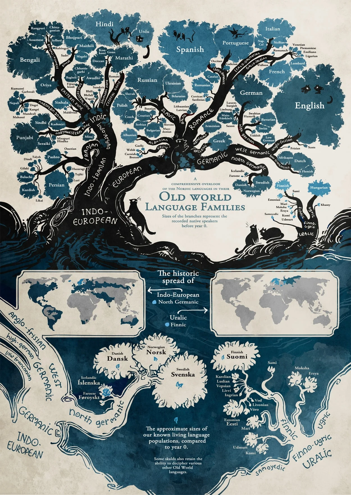

Characteristics and History
Characteristics
Languages are complex systems of communication that consist of words, grammar, and syntax. They can be spoken, written, or signed, and they evolve over time. Each language has its own unique characteristics, such as sounds, vocabulary, and cultural expressions.
Some languages have more complex grammatical structures than others (like Latin), while some rely heavily on context and non-verbal cues for communication (like Sign Languages) and some of them can be tonal, meaning the pitch of the voice can change the meaning of a word (like Mandarin).
History
The history of languages is a fascinating journey that spans thousands of years. Languages have evolved and diversified over time, influenced by factors such as migration, trade, conquest, and cultural exchange. Some languages have become extinct, while others have thrived and spread across the globe.
Throughout history, languages have played a crucial role in shaping societies, preserving cultural heritage, and facilitating communication between different communities. The study of historical linguistics helps us understand the origins and development of languages, as well as their relationships with one another.
Languages have families, with some sharing common ancestors and developing distinct characteristics over time. This interconnectedness highlights the dynamic nature of language evolution.

Conclusion
In conclusion, languages are not just tools for communication but are integral to our identity and culture. Understanding their characteristics and history helps us appreciate the diversity and richness of human expression. I hope this information has provided you with a deeper appreciation for the complexity and beauty of languages.
- Trivia
Which of the following was created artificially to facilitate communication between people of different native languages?
Answer: Letter A - Esperanto was created artificially in the late 19th century by L. L. Zamenhof to facilitate communication between people of different native languages.- Esperanto
- Sanskrit
- Greek
Which of the following has the most countries where the language is official?
Answer: Letter B - French is the official language in 29 countries.- Italian
- French
- Spanish
Which of the following has the most languages spoken inside its territory?
Answer: Letter C - Papua New Guinea has the most languages spoken within its territory, with over 800 languages.- India
- Brazil
- Papua New Guinea
Which of the following uses an alphabet that is not based on the Latin script?
Answer: Letter B - Russian uses the Cyrillic script.- German
- Russian
- English
Which of the following is considered a dead language?
Answer: Letter A - Latin is considered a dead language.- Latin
- Arabic
- Hebrew